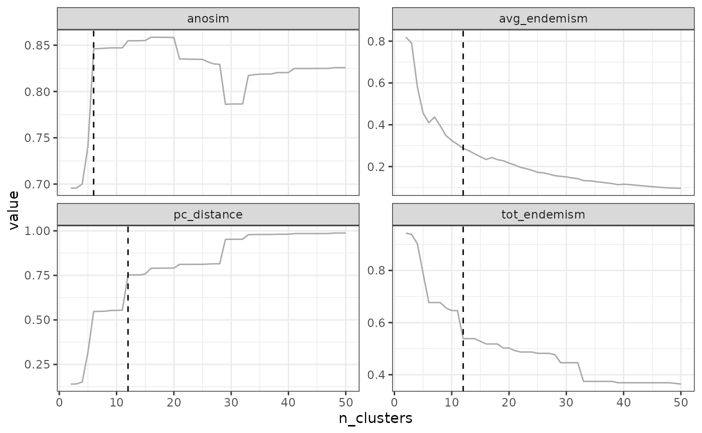
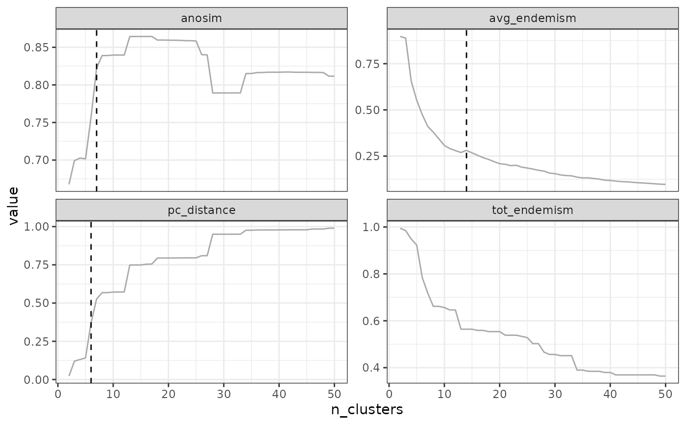
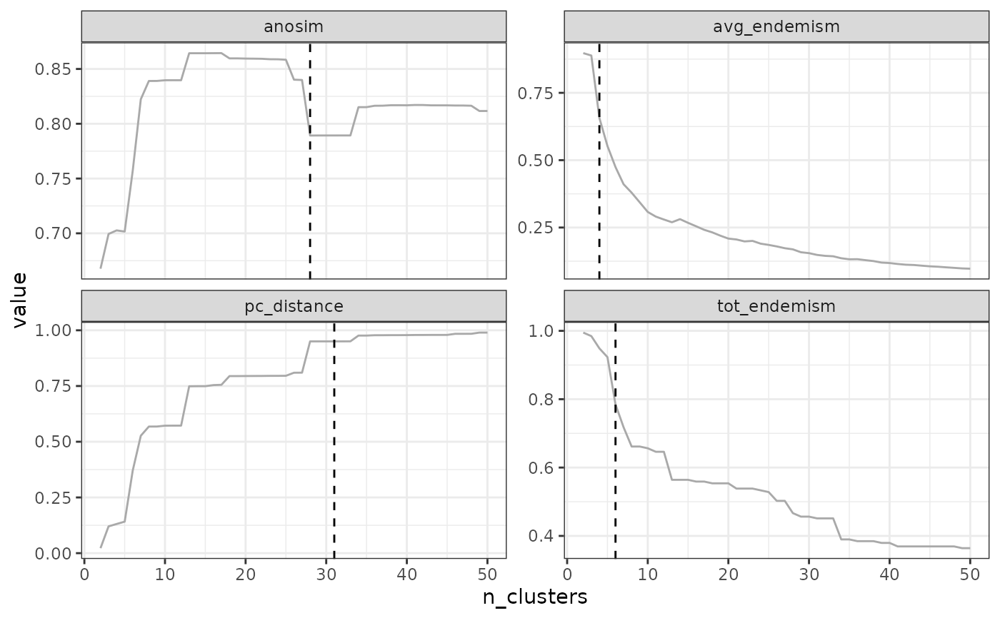
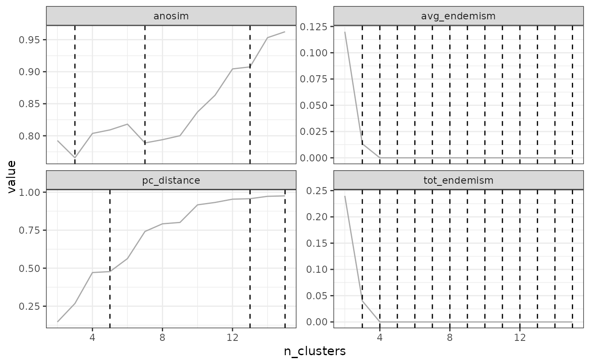
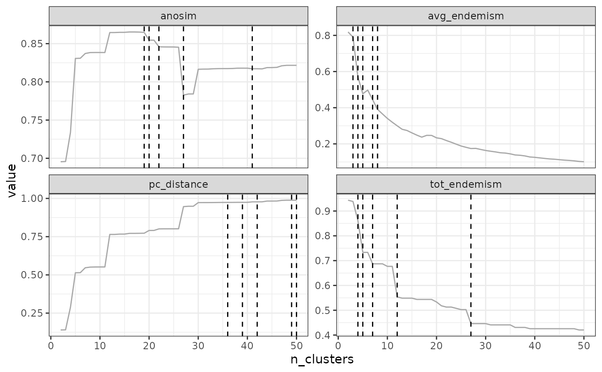
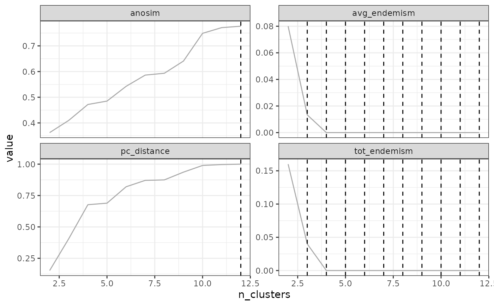
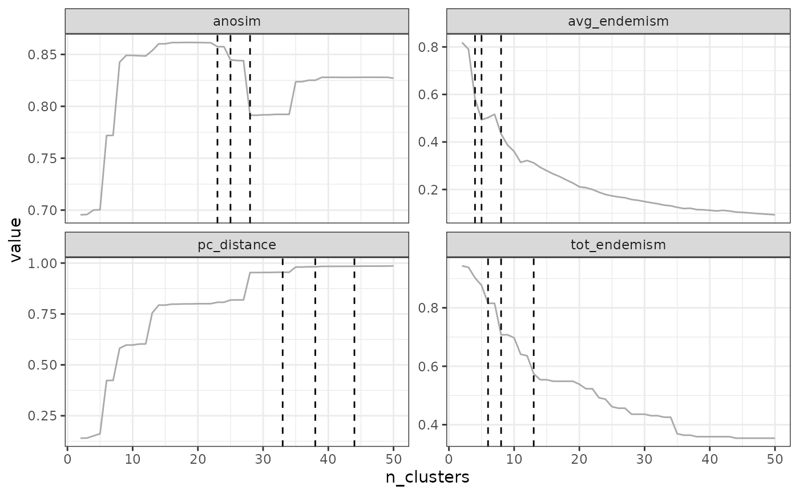
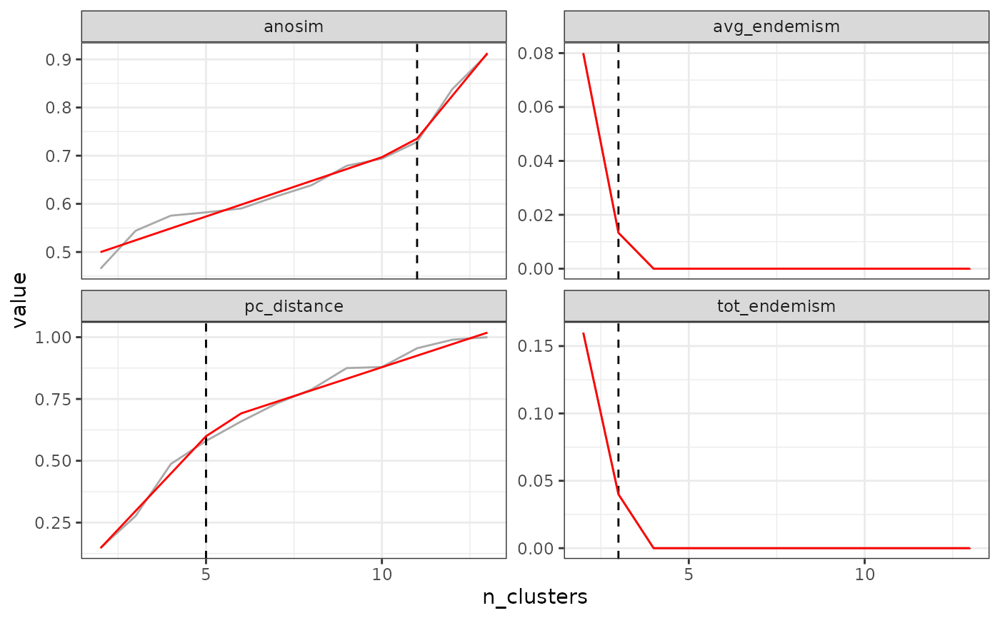

Search for an optimal number of clusters in a list of partitions
Source:R/find_optimal_n.R
find_optimal_n.RdThis function aims at optimizing one or several criteria on a set of ordered partitions. It is usually applied to find one (or several) optimal number(s) of clusters on, for example, a hierarchical tree to cut, or a range of partitions obtained from k-means or PAM. Users are advised to be careful if applied in other cases (e.g., partitions which are not ordered in an increasing or decreasing sequence, or partitions which are not related to each other).
Usage
find_optimal_n(
partitions,
metrics_to_use = "all",
criterion = "elbow",
step_quantile = 0.99,
step_levels = NULL,
step_round_above = TRUE,
metric_cutoffs = c(0.5, 0.75, 0.9, 0.95, 0.99, 0.999),
n_breakpoints = 1,
plot = TRUE
)Arguments
- partitions
a
bioregion.partition.metricsobject (output frompartition_metrics()or adata.framewith the first two columns named "K" (partition name) and "n_clusters" (number of clusters) and the following columns containing evaluation metrics (numeric values)- metrics_to_use
character string or vector of character strings indicating upon which metric(s) in
partitionsthe optimal number of clusters should be calculated. Defaults to"all"which means all metrics available inpartitionswill be used- criterion
character string indicating the criterion to be used to identify optimal number(s) of clusters. Available methods currently include
"elbow","increasing_step","decreasing_step","cutoff","breakpoints","min"or"max". Default is"elbow". See details.- step_quantile
if
"increasing_step"or"decreasing_step", specify here the quantile of differences between two consecutive k to be used as the cutoff to identify the most important steps ineval_metric- step_levels
if
"increasing_step"or"decreasing_step", specify here the number of largest steps to keep as cutoffs.- step_round_above
a
booleanindicating if the optimal number of clusters should be picked above or below the identified steps. Indeed, each step will correspond to a sudden increase or decrease between partition X & partition X+1: should the optimal partition be X+1 (step_round_above = TRUE) or X (step_round_above = FALSE? Defaults toTRUE- metric_cutoffs
if
criterion = "cutoff", specify here the cutoffs ofeval_metricat which the number of clusters should be extracted- n_breakpoints
specify here the number of breakpoints to look for in the curve. Defaults to 1
- plot
a boolean indicating if a plot of the first
eval_metricshould be drawn with the identified optimal numbers of cutoffs
Value
a list of class bioregion.optimal.n with three elements:
args: input argumentsevaluation_df: the input evaluation data.frame appended withbooleancolumns identifying the optimal numbers of clustersoptimal_nb_clusters: a list containing the optimal number(s) of cluster(s) for each metric specified in"metrics_to_use", based on the chosencriterionplot: if requested, the plot will be stored in this slot
Details
This function explores the relationship evaluation metric ~ number of clusters, and a criterion is applied to search an optimal number of clusters.
Please read the note section about the following criteria.
Foreword:
Here we implemented a set of criteria commonly found in the literature or recommended in the bioregionalisation literature. Nevertheless, we also advocate to move beyond the "Search one optimal number of clusters" paradigm, and consider investigating "multiple optimal numbers of clusters". Indeed, using only one optimal number of clusters may simplify the natural complexity of biological datasets, and, for example, ignore the often hierarchical / nested nature of bioregionalisations. Using multiple partitions likely avoids this oversimplification bias and may convey more information. See, for example, the reanalysis of Holt et al. (2013) by Ficetola2017bioregion, where they used deep, intermediate and shallow cuts.
Following this rationale, several of the criteria implemented here can/will return multiple "optimal" numbers of clusters, depending on user choices.
Criteria to find optimal number(s) of clusters
elbow: This method consists in finding one elbow in the evaluation metric curve, as is commonly done in clustering analyses. The idea is to approximate the number of clusters at which the evaluation metric no longer increments.It is based on a fast method finding the maximum distance between the curve and a straight line linking the minimum and maximum number of points. The code we use here is based on code written by Esben Eickhardt available here https://stackoverflow.com/questions/2018178/finding-the-best-trade-off-point-on-a-curve/42810075#42810075. The code has been modified to work on both increasing and decreasing evaluation metrics.increasing_stepordecreasing_step: This method consists in identifying clusters at the most important changes, or steps, in the evaluation metric. The objective can be to either look for largest increases (increasing_step) or largest decreasesdecreasing_step. Steps are calculated based on the pairwise differences between partitions. Therefore, this is relative to the distribution of differences in the evaluation metric over the tested partitions. Specifystep_quantileas the quantile cutoff above which steps will be selected as most important (by default, 0.99, i.e. the largest 1\ selected).Alternatively, you can also choose to specify the number of top steps to keep, e.g. to keep the largest three steps, specifystep_level = 3. Basically this method will emphasize the most important changes in the evaluation metric as a first approximation of where important cuts can be chosen.**Please note that you should choose betweenincreasing_stepanddecreasing_stepdepending on the nature of your evaluation metrics. For example, for metrics that are monotonously decreasing (e.g., endemism metrics"avg_endemism" & "tot_endemism") with the number of clusters should n_clusters, you should choosedecreasing_step. On the contrary, for metrics that are monotonously increasing with the number of clusters (e.g.,"pc_distance"), you should chooseincreasing_step. **cutoffs: This method consists in specifying the cutoff value(s) in the evaluation metric from which the number(s) of clusters should be derived. This is the method used by Holt2013bioregion. Note, however, that the cut-offs suggested by Holt et al. (0.9, 0.95, 0.99, 0.999) may be only relevant at very large spatial scales, and lower cut-offs should be considered at finer spatial scales.breakpoints: This method consists in finding break points in the curve using a segmented regression. Users have to specify the number of expected break points inn_breakpoints(defaults to 1). Note that since this method relies on a regression model, it should probably not be applied with a low number of partitions.min&max: Picks the optimal partition(s) respectively at the minimum or maximum value of the evaluation metric.
Note
Please note that finding the optimal number of clusters is a procedure which normally requires decisions from the users, and as such can hardly be fully automatized. Users are strongly advised to read the references indicated below to look for guidance on how to choose their optimal number(s) of clusters. Consider the "optimal" numbers of clusters returned by this function as first approximation of the best numbers for your bioregionalisation.
References
Castro-Insua2018bioregion
Ficetola2017bioregion
Holt2013bioregion
Kreft2010bioregion
Langfelder2008bioregion
Author
Boris Leroy (leroy.boris@gmail.com), Maxime Lenormand (maxime.lenormand@inrae.fr) and Pierre Denelle (pierre.denelle@gmail.com)
Examples
comat <- matrix(sample(0:1000, size = 500, replace = TRUE, prob = 1/1:1001),
20, 25)
rownames(comat) <- paste0("Site",1:20)
colnames(comat) <- paste0("Species",1:25)
comnet <- mat_to_net(comat)
dissim <- dissimilarity(comat, metric = "all")
# User-defined number of clusters
tree1 <- hclu_hierarclust(dissim,
n_clust = 2:15)
#> Building the iterative hierarchical consensus tree... Note that this process can take time especially if you have a lot of sites.
#>
#> Final tree has a 0.8201 cophenetic correlation coefficient with the initial dissimilarity
#> matrix
#> Warning: The requested number of cluster could not be found
#> for k = 15. Closest number found: 14
tree1
#> Clustering results for algorithm : hclu_hierarclust
#> (hierarchical clustering based on a dissimilarity matrix)
#> - Number of sites: 20
#> - Name of dissimilarity metric: Jaccard
#> - Tree construction method: average
#> - Randomization of the dissimilarity matrix: yes, number of trials 100
#> - Method to compute the final tree: Iterative consensus hierarchical tree
#> - Cophenetic correlation coefficient: 0.82
#> - Number of clusters requested by the user: 2 3 4 5 6 7 8 9 10 11 ... (with 4 more values)
#> Clustering results:
#> - Number of partitions: 14
#> - Partitions are hierarchical
#> - Number of clusters: 2 3 4 5 6 7 8 9 10 11 ... (with 4 more values)
#> - Height of cut of the hierarchical tree: 0.375 0.344 0.312 0.281 0.27 0.266 0.25 0.219 0.203 0.191 ... (with 4 more values)
a <- partition_metrics(tree1,
dissimilarity = dissim,
net = comnet,
species_col = "Node2",
site_col = "Node1",
eval_metric = c("tot_endemism",
"avg_endemism",
"pc_distance",
"anosim"))
#> Computing similarity-based metrics...
#> - pc_distance OK
#> - anosim OK
#> Computing composition-based metrics...
#> - avg_endemism OK
#> - tot_endemism OK
find_optimal_n(a)
#> [1] "tot_endemism" "avg_endemism" "pc_distance" "anosim"
#> Number of partitions: 14
#> Searching for potential optimal number(s) of clusters based on the elbow method
#> * elbow found at:
#> tot_endemism 4
#> avg_endemism 3
#> pc_distance 9
#> anosim 2
#> Warning: The elbow method is likely not suitable for the ANOSIM metric. You should rather look for leaps in the curve (see criterion = 'increasing_step' or decreasing_step)
#> Plotting results...

#> Search for an optimal number of clusters:
#> - 14 partition(s) evaluated
#> - Range of clusters explored: from 2 to 14
#> - Evaluated metric(s): tot_endemism avg_endemism pc_distance anosim
#>
#> Potential optimal partition(s):
#> - Criterion chosen to optimise the number of clusters: elbow
#> - Optimal partition(s) of clusters for each metric:
#> tot_endemism - 4
#> avg_endemism - 3
#> pc_distance - 9
#> anosim - 2
find_optimal_n(a, criterion = "increasing_step")
#> [1] "tot_endemism" "avg_endemism" "pc_distance" "anosim"
#> Number of partitions: 14
#> Searching for potential optimal number(s) of clusters based on the increasing_step method
#> - Step method
#> Warning: Criterion 'increasing_step' cannot work properly with metric 'tot_endemism', because this metric is usually monotonously decreasing. Consider using criterion = 'decreasing_step' instead.
#> Plotting results...

#> Search for an optimal number of clusters:
#> - 14 partition(s) evaluated
#> - Range of clusters explored: from 2 to 14
#> - Evaluated metric(s): tot_endemism avg_endemism pc_distance anosim
#>
#> Potential optimal partition(s):
#> - Criterion chosen to optimise the number of clusters: increasing_step
#> (step quantile chosen: 0.99 (i.e., only the top 1 % increase in evaluation metrics are used as break points for the number of clusters)
#> - Optimal partition(s) of clusters for each metric:
#> tot_endemism -
#> avg_endemism -
#> pc_distance - 5
#> anosim - 9
find_optimal_n(a, criterion = "decreasing_step")
#> [1] "tot_endemism" "avg_endemism" "pc_distance" "anosim"
#> Number of partitions: 14
#> Searching for potential optimal number(s) of clusters based on the decreasing_step method
#> - Step method
#> Warning: Criterion 'decreasing_step' cannot work properly with metrics 'pc_distance' or 'avg_endemism', because these metrics are usually monotonously decreasing. Consider using criterion = 'increasing_step' instead.
#> Plotting results...

#> Search for an optimal number of clusters:
#> - 14 partition(s) evaluated
#> - Range of clusters explored: from 2 to 14
#> - Evaluated metric(s): tot_endemism avg_endemism pc_distance anosim
#>
#> Potential optimal partition(s):
#> - Criterion chosen to optimise the number of clusters: decreasing_step
#> (step quantile chosen: 0.99 (i.e., only the top 1 % decrease in evaluation metrics are used as break points for the number of clusters)
#> - Optimal partition(s) of clusters for each metric:
#> tot_endemism - 3
#> avg_endemism - 3
#> pc_distance - 14
#> anosim - 5
find_optimal_n(a, criterion = "decreasing_step",
step_levels = 3)
#> [1] "tot_endemism" "avg_endemism" "pc_distance" "anosim"
#> Number of partitions: 14
#> Searching for potential optimal number(s) of clusters based on the decreasing_step method
#> - Step method
#> Warning: Criterion 'decreasing_step' cannot work properly with metrics 'pc_distance' or 'avg_endemism', because these metrics are usually monotonously decreasing. Consider using criterion = 'increasing_step' instead.
#> Warning: The number of optimal N for method 'tot_endemism' is suspiciously high, consider switching between 'increasing_step' and 'decreasing_step'
#> Warning: The number of optimal N for method 'avg_endemism' is suspiciously high, consider switching between 'increasing_step' and 'decreasing_step'
#> Plotting results...

#> Search for an optimal number of clusters:
#> - 14 partition(s) evaluated
#> - Range of clusters explored: from 2 to 14
#> - Evaluated metric(s): tot_endemism avg_endemism pc_distance anosim
#>
#> Potential optimal partition(s):
#> - Criterion chosen to optimise the number of clusters: decreasing_step
#> (step quantile chosen: 0.99 (i.e., only the top 1 % decrease in evaluation metrics are used as break points for the number of clusters)
#> - Optimal partition(s) of clusters for each metric:
#> tot_endemism - 3 4 5 6 7 8 9 10 11 12 13 14
#> avg_endemism - 3 4 5 6 7 8 9 10 11 12 13 14
#> pc_distance - 7 13 14
#> anosim - 3 5 14
find_optimal_n(a, criterion = "decreasing_step",
step_quantile = .9)
#> [1] "tot_endemism" "avg_endemism" "pc_distance" "anosim"
#> Number of partitions: 14
#> Searching for potential optimal number(s) of clusters based on the decreasing_step method
#> - Step method
#> Warning: Criterion 'decreasing_step' cannot work properly with metrics 'pc_distance' or 'avg_endemism', because these metrics are usually monotonously decreasing. Consider using criterion = 'increasing_step' instead.
#> Plotting results...

#> Search for an optimal number of clusters:
#> - 14 partition(s) evaluated
#> - Range of clusters explored: from 2 to 14
#> - Evaluated metric(s): tot_endemism avg_endemism pc_distance anosim
#>
#> Potential optimal partition(s):
#> - Criterion chosen to optimise the number of clusters: decreasing_step
#> (step quantile chosen: 0.9 (i.e., only the top 10 % decrease in evaluation metrics are used as break points for the number of clusters)
#> - Optimal partition(s) of clusters for each metric:
#> tot_endemism - 3 4
#> avg_endemism - 3 4
#> pc_distance - 13 14
#> anosim - 3 5
find_optimal_n(a, criterion = "decreasing_step",
step_levels = 3)
#> [1] "tot_endemism" "avg_endemism" "pc_distance" "anosim"
#> Number of partitions: 14
#> Searching for potential optimal number(s) of clusters based on the decreasing_step method
#> - Step method
#> Warning: Criterion 'decreasing_step' cannot work properly with metrics 'pc_distance' or 'avg_endemism', because these metrics are usually monotonously decreasing. Consider using criterion = 'increasing_step' instead.
#> Warning: The number of optimal N for method 'tot_endemism' is suspiciously high, consider switching between 'increasing_step' and 'decreasing_step'
#> Warning: The number of optimal N for method 'avg_endemism' is suspiciously high, consider switching between 'increasing_step' and 'decreasing_step'
#> Plotting results...

#> Search for an optimal number of clusters:
#> - 14 partition(s) evaluated
#> - Range of clusters explored: from 2 to 14
#> - Evaluated metric(s): tot_endemism avg_endemism pc_distance anosim
#>
#> Potential optimal partition(s):
#> - Criterion chosen to optimise the number of clusters: decreasing_step
#> (step quantile chosen: 0.99 (i.e., only the top 1 % decrease in evaluation metrics are used as break points for the number of clusters)
#> - Optimal partition(s) of clusters for each metric:
#> tot_endemism - 3 4 5 6 7 8 9 10 11 12 13 14
#> avg_endemism - 3 4 5 6 7 8 9 10 11 12 13 14
#> pc_distance - 7 13 14
#> anosim - 3 5 14
find_optimal_n(a, criterion = "decreasing_step",
step_levels = 3)
#> [1] "tot_endemism" "avg_endemism" "pc_distance" "anosim"
#> Number of partitions: 14
#> Searching for potential optimal number(s) of clusters based on the decreasing_step method
#> - Step method
#> Warning: Criterion 'decreasing_step' cannot work properly with metrics 'pc_distance' or 'avg_endemism', because these metrics are usually monotonously decreasing. Consider using criterion = 'increasing_step' instead.
#> Warning: The number of optimal N for method 'tot_endemism' is suspiciously high, consider switching between 'increasing_step' and 'decreasing_step'
#> Warning: The number of optimal N for method 'avg_endemism' is suspiciously high, consider switching between 'increasing_step' and 'decreasing_step'
#> Plotting results...

#> Search for an optimal number of clusters:
#> - 14 partition(s) evaluated
#> - Range of clusters explored: from 2 to 14
#> - Evaluated metric(s): tot_endemism avg_endemism pc_distance anosim
#>
#> Potential optimal partition(s):
#> - Criterion chosen to optimise the number of clusters: decreasing_step
#> (step quantile chosen: 0.99 (i.e., only the top 1 % decrease in evaluation metrics are used as break points for the number of clusters)
#> - Optimal partition(s) of clusters for each metric:
#> tot_endemism - 3 4 5 6 7 8 9 10 11 12 13 14
#> avg_endemism - 3 4 5 6 7 8 9 10 11 12 13 14
#> pc_distance - 7 13 14
#> anosim - 3 5 14
find_optimal_n(a, criterion = "breakpoints")
#> [1] "tot_endemism" "avg_endemism" "pc_distance" "anosim"
#> Number of partitions: 14
#> Searching for potential optimal number(s) of clusters based on the breakpoints method
#> Plotting results...
#> (the red line is the prediction from the segmented regression)

#> Search for an optimal number of clusters:
#> - 14 partition(s) evaluated
#> - Range of clusters explored: from 2 to 14
#> - Evaluated metric(s): tot_endemism avg_endemism pc_distance anosim
#>
#> Potential optimal partition(s):
#> - Criterion chosen to optimise the number of clusters: breakpoints
#> - Optimal partition(s) of clusters for each metric:
#> tot_endemism - 3
#> avg_endemism - 3
#> pc_distance - 6
#> anosim - 6